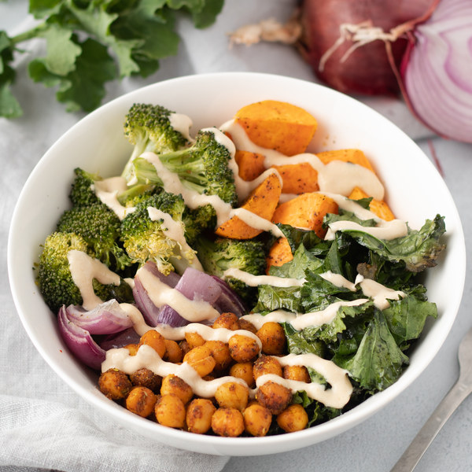

Home
Sweet Potato Chickpea Bowl with Maple-Tahini Sauce

Description
Roasted veggie bowl with sweet potatoes, broccoli, chickpeas, kale,
and red onion with a maple-tahini sauce on top.
Makes 4 servings
Ingredients
- 2 crowns broccoli
- 2 cans chickpeas
- 1 bunch kale
- 1 lemon
- 1 medium red onion
- 11⁄2 lbs sweet potatoes
- 11⁄4 tsp black pepper
- 2 tsp chili powder
- 2 tsp cumin, ground
- 31⁄3 tbsp olive oil
- 1 tsp garlic powder
- 1 tsp oregano, dried
- 4 tsp pure maple syrup
- 21⁄2 tsp salt
- 1⁄2 cup tahini
- 1 tsp tumeric, ground
- 1⁄4 cup water
Steps
-
Preheat oven to 400°F
-
Wash and dry the fresh produce
- 11⁄2 lbs sweet
potatoes
- 2 crowns broccoli
- 1 bunch kale
- 1 lemon
-
Peel the sweet potatoes and onions; cut both into 1-inch
pieces. Transfer to a large bowl; add oil, salt, and
pepper, and toss to coat. Divide veggies between two
baking sheets and bake, until softened, about 10
minutes. Reserve bowl for later use.
- 1 medium red onion
- 2 tsp olive oil
- 1 tsp salt
- 1⁄2 tsp black
pepper
-
Meanwhile, drain and rinse the chickpeas; set aside to
drain further.
-
Separate broccoli into bite-sized florets and cut stems
into smaller pieces. Place broccoli in the large bowl,
add oil, salt, and pepper, and toss to coat. Add to
baking sheets with the sweet potatoes, tossing to
combine; bake until cooked through, about 10 more
minutes. Reserve bowl for later use.
- 2 tsp olive oil
- 1⁄2 tsp salt
- 1⁄8 tsp black
pepper
-
Preheat a large skillet over medium-high heat.
-
Combine spices in a small bowl.
- 2 tsp cumin
- 2 tsp chili powder
- 1 tsp garlic powder
- 1 tsp oregano
- 1 tsp tumeric
- 1⁄2 tsp salt
- 1⁄2 tsp black
pepper
-
When the skillet is hot, add oil and swirl to coat the
bottom.
-
Add chickpeas and spices to the skillet and toss to
coat. Cook, stirring occasionally, until chickpeas are
golden and fragrant, about 12 minutes. When done, set
aside.
-
Meanwhile, fold kale leaves in half lengthwise and slice
off the stems. Chop or tear leaves into bite-sized
pieces and transfer to the large bowl; add oil, salt,
and pepper and toss to combine. Add to the baking sheets
and cook until wilted, about 5 more minutes.
- 2 tsp olive oil
- 1⁄2 tsp salt
- 1⁄8 tsp black
pepper
-
Juice lemon into a small bowl; add tahini, maple syrup,
and water, whisking to combine the dressing. Add
additional water as needed to reach a drizzling
consistency.
- 1⁄2 cup tahini
- 4 tsp pure maple syrup
- 1⁄4 cup water
-
To serve, divide roasted vegetables and chickpeas
between bowls. Drizzle with tahini-maple dressing and
enjoy!